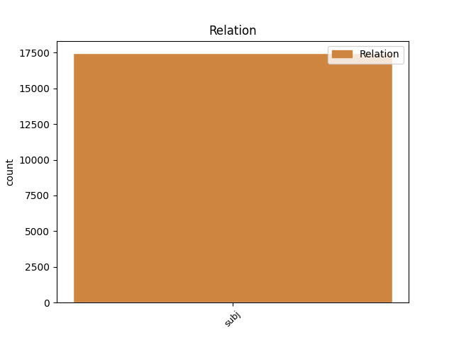
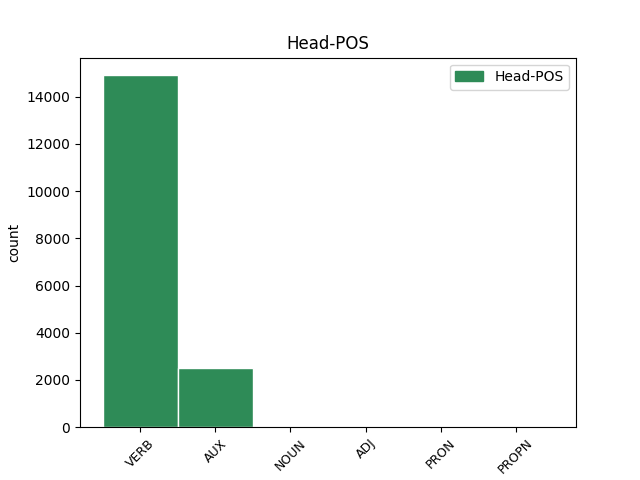
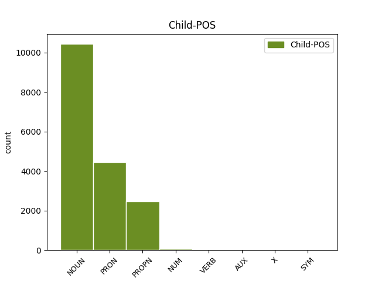

Distribution of features within this leaf



Agreement Rules sorted by frequency.
- When the dependent token is the subject(subj) of the head token, and the dependent token is NOUN.
1 vaeghõivatud vaeg_hõiva=tu NOUN S Case=Nom|Number=Plur|Tense=Past|VerbForm=Part|Voice=Pass 3 subj _ _
2 - _ _ _ _ 0 _ _ _
3 soovivad soovima VERB V Mood=Ind|Number=Plur|Person=3|Tense=Pres|VerbForm=Fin|Voice=Act 0 _ _ _
4 rohkem _ _ _ _ 0 _ _ _
5 töötada _ _ _ _ 0 _ _ _
6 ja _ _ _ _ 0 _ _ _
7 on _ _ _ _ 0 _ _ _
8 valmis _ _ _ _ 0 _ _ _
9 lisatööd _ _ _ _ 0 _ _ _
10 kohe _ _ _ _ 0 _ _ _
11 ( _ _ _ _ 0 _ _ _
12 kahe _ _ _ _ 0 _ _ _
13 nädala _ _ _ _ 0 _ _ _
14 jooksul _ _ _ _ 0 _ _ _
15 ) _ _ _ _ 0 _ _ _
16 vastu _ _ _ _ 0 _ _ _
17 võtma _ _ _ _ 0 _ _ _
1 Perioodil _ _ _ _ 0 _ _ _
2 , _ _ _ _ 0 _ _ _
3 mis mis PRON P Case=Nom|Number=Sing|PronType=Int,Rel 4 subj _ _
4 eelnes eelnema VERB V Mood=Ind|Number=Sing|Person=3|Tense=Past|VerbForm=Fin|Voice=Act 0 _ _ _
5 tööpuuduse _ _ _ _ 0 _ _ _
6 hüppelisele _ _ _ _ 0 _ _ _
7 langusele _ _ _ _ 0 _ _ _
8 , _ _ _ _ 0 _ _ _
9 investeeriti _ _ _ _ 0 _ _ _
10 neisse _ _ _ _ 0 _ _ _
11 poliitikatesse _ _ _ _ 0 _ _ _
12 vägagi _ _ _ _ 0 _ _ _
13 palju _ _ _ _ 0 _ _ _
14 ( _ _ _ _ 0 _ _ _
15 1996. _ _ _ _ 0 _ _ _
16 aastal _ _ _ _ 0 _ _ _
17 1,75 _ _ _ _ 0 _ _ _
18 % _ _ _ _ 0 _ _ _
19 SKP-st _ _ _ _ 0 _ _ _
20 ) _ _ _ _ 0 _ _ _
21 . _ _ _ _ 0 _ _ _
1 See _ _ _ _ 0 _ _ _
2 ei _ _ _ _ 0 _ _ _
3 pruugi _ _ _ _ 0 _ _ _
4 tähendada _ _ _ _ 0 _ _ _
5 , _ _ _ _ 0 _ _ _
6 et _ _ _ _ 0 _ _ _
7 Eesti Eesti PROPN S Case=Nom|Number=Sing 8 subj _ _
8 võib võima AUX V Mood=Ind|Number=Sing|Person=3|Tense=Pres|VerbForm=Fin|Voice=Act 0 _ _ _
9 oma _ _ _ _ 0 _ _ _
10 eksportnišid _ _ _ _ 0 _ _ _
11 kaotada _ _ _ _ 0 _ _ _
12 . _ _ _ _ 0 _ _ _
1 Tööelu _ _ _ _ 0 _ _ _
2 baromeetri _ _ _ _ 0 _ _ _
3 andmetel _ _ _ _ 0 _ _ _
4 ( _ _ _ _ 0 _ _ _
5 Antila _ _ _ _ 0 _ _ _
6 , _ _ _ _ 0 _ _ _
7 J _ _ _ _ 0 _ _ _
8 , _ _ _ _ 0 _ _ _
9 Ylöstalo _ _ _ _ 0 _ _ _
10 , _ _ _ _ 0 _ _ _
11 P _ _ _ _ 0 _ _ _
12 , _ _ _ _ 0 _ _ _
13 1999 _ _ _ _ 0 _ _ _
14 ) _ _ _ _ 0 _ _ _
15 töötajate _ _ _ _ 0 _ _ _
16 võimalused _ _ _ _ 0 _ _ _
17 saada _ _ _ _ 0 _ _ _
18 täiendõpet _ _ _ _ 0 _ _ _
19 paranevad _ _ _ _ 0 _ _ _
20 tasapisi _ _ _ _ 0 _ _ _
21 - _ _ _ _ 0 _ _ _
22 1/5 1/5 NUM N Case=Ela|Number=Sing|NumForm=Digit|NumType=Card 24 subj _ _
23 vastanuist _ _ _ _ 0 _ _ _
24 väitis väitma VERB V Mood=Ind|Number=Sing|Person=3|Tense=Past|VerbForm=Fin|Voice=Act 0 _ _ _
25 , _ _ _ _ 0 _ _ _
26 et _ _ _ _ 0 _ _ _
27 võimalused _ _ _ _ 0 _ _ _
28 õppimiseks _ _ _ _ 0 _ _ _
29 paranevad _ _ _ _ 0 _ _ _
30 . _ _ _ _ 0 _ _ _
1 Kaua _ _ _ _ 0 _ _ _
2 selliseks _ _ _ _ 0 _ _ _
3 operatsiooniks _ _ _ _ 0 _ _ _
4 aega _ _ _ _ 0 _ _ _
5 kulub kuluma VERB V Mood=Ind|Number=Sing|Person=3|Tense=Pres|VerbForm=Fin|Voice=Act 7 subj _ SpaceAfter=No
6 , _ _ _ _ 0 _ _ _
7 sõltub sõltuma VERB V Mood=Ind|Number=Sing|Person=3|Tense=Pres|VerbForm=Fin|Voice=Act 0 _ _ _
8 eeskätt _ _ _ _ 0 _ _ _
9 sellest _ _ _ _ 0 _ _ _
10 , _ _ _ _ 0 _ _ _
11 kas _ _ _ _ 0 _ _ _
12 kasutatakse _ _ _ _ 0 _ _ _
13 USB1.1 _ _ _ _ 0 _ _ _
14 või _ _ _ _ 0 _ _ _
15 USB _ _ _ _ 0 _ _ _
16 2.0 _ _ _ _ 0 _ _ _
17 liidest _ _ _ _ 0 _ _ _
18 . _ _ _ _ 0 _ _ _
1 Sageli _ _ _ _ 0 _ _ _
2 võivad _ _ _ _ 0 _ _ _
3 invasiiv-diagnostilisel _ _ _ _ 0 _ _ _
4 eesmärgil _ _ _ _ 0 _ _ _
5 teostatava _ _ _ _ 0 _ _ _
6 sõlmede _ _ _ _ 0 _ _ _
7 eemaldamise _ _ _ _ 0 _ _ _
8 järel _ _ _ _ 0 _ _ _
9 amüloidoosikolded _ _ _ _ 0 _ _ _
10 taastekkida _ _ _ _ 0 _ _ _
11 , _ _ _ _ 0 _ _ _
12 seejuures _ _ _ _ 0 _ _ _
13 on olema AUX V Mood=Ind|Number=Sing|Person=3|Tense=Pres|VerbForm=Fin|Voice=Act 0 _ _ _
14 teadmata _ _ _ _ 0 _ _ _
15 , _ _ _ _ 0 _ _ _
16 kas _ _ _ _ 0 _ _ _
17 põhjuseks _ _ _ _ 0 _ _ _
18 on olema AUX V Mood=Ind|Number=Sing|Person=3|Tense=Pres|VerbForm=Fin|Voice=Act 13 subj _ _
19 ebatäielik _ _ _ _ 0 _ _ _
20 resektsioon _ _ _ _ 0 _ _ _
21 või _ _ _ _ 0 _ _ _
22 areneb _ _ _ _ 0 _ _ _
23 haigus _ _ _ _ 0 _ _ _
24 ise _ _ _ _ 0 _ _ _
25 edasi _ _ _ _ 0 _ _ _
26 uute _ _ _ _ 0 _ _ _
27 sõlmede _ _ _ _ 0 _ _ _
28 moodustumisega _ _ _ _ 0 _ _ _
29 . _ _ _ _ 0 _ _ _
1 Kui _ _ _ _ 0 _ _ _
2 aastal _ _ _ _ 0 _ _ _
3 1900 _ _ _ _ 0 _ _ _
4 suri surema VERB V Mood=Ind|Number=Sing|Person=3|Tense=Past|VerbForm=Fin|Voice=Act 0 _ _ _
5 Põhja-Ameerikas _ _ _ _ 0 _ _ _
6 nendesse _ _ _ _ 0 _ _ _
7 haigustesse _ _ _ _ 0 _ _ _
8 14,2 _ _ _ _ 0 _ _ _
9 % % SYM N Case=Nom|Number=Sing|NumForm=Digit|NumType=Card 4 subj _ SpaceAfter=No
10 , _ _ _ _ 0 _ _ _
11 siis _ _ _ _ 0 _ _ _
12 möödunud _ _ _ _ 0 _ _ _
13 sajandi _ _ _ _ 0 _ _ _
14 90-ndatel _ _ _ _ 0 _ _ _
15 olid _ _ _ _ 0 _ _ _
16 need _ _ _ _ 0 _ _ _
17 haigused _ _ _ _ 0 _ _ _
18 surmapõhjuseks _ _ _ _ 0 _ _ _
19 juba _ _ _ _ 0 _ _ _
20 33 _ _ _ _ 0 _ _ _
21 % _ _ _ _ 0 _ _ _
22 juhtudest _ _ _ _ 0 _ _ _
23 ( _ _ _ _ 0 _ _ _
24 The _ _ _ _ 0 _ _ _
25 50 _ _ _ _ 0 _ _ _
26 … _ _ _ _ 0 _ _ _
27 , _ _ _ _ 0 _ _ _
28 i.a.1 _ _ _ _ 0 _ _ _
29 ) _ _ _ _ 0 _ _ _
30 . _ _ _ _ 0 _ _ _
1 Aja _ _ _ _ 0 _ _ _
2 jooksul _ _ _ _ 0 _ _ _
3 pruritus pruritus X S Case=Nom|Number=Sing 4 subj _ _
4 vähenes vähenema VERB V Mood=Ind|Number=Sing|Person=3|Tense=Past|VerbForm=Fin|Voice=Act 0 _ _ _
5 , _ _ _ _ 0 _ _ _
6 kuid _ _ _ _ 0 _ _ _
7 naha _ _ _ _ 0 _ _ _
8 välised _ _ _ _ 0 _ _ _
9 muutused _ _ _ _ 0 _ _ _
10 ei _ _ _ _ 0 _ _ _
11 taandarenenud _ _ _ _ 0 _ _ _
12 . _ _ _ _ 0 _ _ _
Disagree Examples:
1 Tavaliselt _ _ _ _ 0 _ _ _
2 liiguvad _ _ _ _ 0 _ _ _
3 sellisel _ _ _ _ 0 _ _ _
4 varjatud _ _ _ _ 0 _ _ _
5 moel _ _ _ _ 0 _ _ _
6 narkoärist _ _ _ _ 0 _ _ _
7 , _ _ _ _ 0 _ _ _
8 altkäemaksudest _ _ _ _ 0 _ _ _
9 , _ _ _ _ 0 _ _ _
10 finantspettustest _ _ _ _ 0 _ _ _
11 jt _ _ _ _ 0 _ _ _
12 kriminaalsetest _ _ _ _ 0 _ _ _
13 tehingutest _ _ _ _ 0 _ _ _
14 pärinevad _ _ _ _ 0 _ _ _
15 summad _ _ _ _ 0 _ _ _
16 ehk _ _ _ _ 0 _ _ _
17 tegemist tegemine NOUN S Case=Par|Number=Sing 18 subj _ _
18 on olema AUX V Mood=Ind|Number=Plur|Person=3|Tense=Pres|VerbForm=Fin|Voice=Act 0 _ _ _
19 rahapesuga _ _ _ _ 0 _ _ _
20 . _ _ _ _ 0 _ _ _
1 Pakk _ _ _ _ 0 _ _ _
2 pabereid paber NOUN S Case=Par|Number=Plur 3 subj _ _
3 asub asuma VERB V Mood=Ind|Number=Sing|Person=3|Tense=Pres|VerbForm=Fin|Voice=Act 0 _ _ _
4 Reykjaviki _ _ _ _ 0 _ _ _
5 panga _ _ _ _ 0 _ _ _
6 salajases _ _ _ _ 0 _ _ _
7 seifis _ _ _ _ 0 _ _ _
8 , _ _ _ _ 0 _ _ _
9 mida _ _ _ _ 0 _ _ _
10 Miksoni _ _ _ _ 0 _ _ _
11 lapsed _ _ _ _ 0 _ _ _
12 pole _ _ _ _ 0 _ _ _
13 veel _ _ _ _ 0 _ _ _
14 avanud _ _ _ _ 0 _ _ _
15 . _ _ _ _ 0 _ _ _
1 Lehe _ _ _ _ 0 _ _ _
2 väitel _ _ _ _ 0 _ _ _
3 karjusid karjuma VERB V Mood=Ind|Number=Plur|Person=3|Tense=Past|VerbForm=Fin|Voice=Act 0 _ _ _
4 8. _ _ _ _ 0 _ _ _
5 mail _ _ _ _ 0 _ _ _
6 ligi _ _ _ _ 0 _ _ _
7 40 _ _ _ _ 0 _ _ _
8 noort noor NOUN S Case=Par|Number=Sing 3 subj _ _
9 Narvas _ _ _ _ 0 _ _ _
10 Daumani _ _ _ _ 0 _ _ _
11 tänaval _ _ _ _ 0 _ _ _
12 loosungit _ _ _ _ 0 _ _ _
13 " _ _ _ _ 0 _ _ _
14 Sieg _ _ _ _ 0 _ _ _
15 Heil _ _ _ _ 0 _ _ _
16 " _ _ _ _ 0 _ _ _
17 . _ _ _ _ 0 _ _ _
1 Enno _ _ _ _ 0 _ _ _
2 Perel _ _ _ _ 0 _ _ _
3 oli olema AUX V Mood=Ind|Number=Sing|Person=3|Tense=Past|VerbForm=Fin|Voice=Act 0 _ _ _
4 probleeme probleem NOUN S Case=Par|Number=Plur 3 subj _ _
5 ka _ _ _ _ 0 _ _ _
6 enda _ _ _ _ 0 _ _ _
7 juhitavas _ _ _ _ 0 _ _ _
8 ettevõttes _ _ _ _ 0 _ _ _
9 . _ _ _ _ 0 _ _ _
1 Järgnevad järgnema VERB V Mood=Ind|Number=Plur|Person=3|Tense=Pres|VerbForm=Fin|Voice=Act 0 _ _ _
2 Väino Väino PROPN S Case=Nom|Number=Sing 1 subj _ _
3 Viilup _ _ _ _ 0 _ _ _
4 , _ _ _ _ 0 _ _ _
5 Leonid _ _ _ _ 0 _ _ _
6 Lipavski _ _ _ _ 0 _ _ _
7 ja _ _ _ _ 0 _ _ _
8 Parbo _ _ _ _ 0 _ _ _
9 Juchnevits _ _ _ _ 0 _ _ _
10 , _ _ _ _ 0 _ _ _
11 " _ _ _ _ 0 _ _ _
12 räägib _ _ _ _ 0 _ _ _
13 Pere _ _ _ _ 0 _ _ _
14 . _ _ _ _ 0 _ _ _